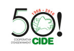

Col·legi CIDE

La funció del nostre centre docent és la d'unificar els esforços d'alumnes, pares i profesionals per al desenvolupament del procés educatiu.
La infraestructura que dóna suport a la tasca educativa està organitzada en règim de COOPERATIVA, amb uns determinats trets d’identitat: aconfessionalitat, llengua catalana, aprenentatge d’altres llengües, creació artística, arrelament a la nostra cultura, família, medi ambient, inclusió de tots i totes, compromís amb l’èxit escolar i social, l’escola i el prestigi professional, formació permanent, gestió educativa eficaç i transparent, avaluació del centre educatiu i integració de les TIC a les aules i al centre, i actituds de coparticipació i interrelació dels seus socis per a un objectiu comú.
Per accedir a la pàgina oficial, seguiu el següent enllaç:
CIDE